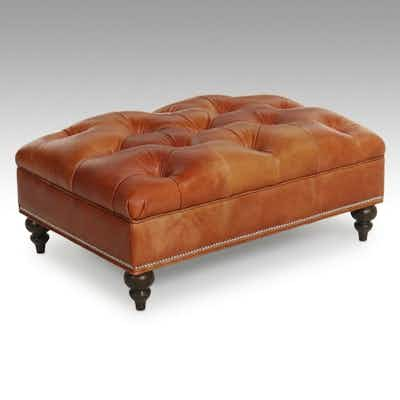

PASSBassett Furniture Button-Tufted Leather Ottoman, 2016
Bassett Furniture button-tufted leather storage/cocktail ottoman, ca. 2016 production
16h left
Current bid$150 · 24 bids
Est. value$201
Your max bid$0
Margin at bid−$174
Details & price history →